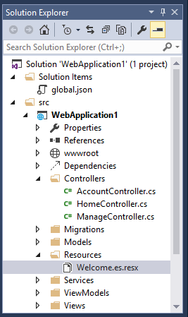

Globalization and localization¶
Rick Anderson, Damien Bowden, Bart Calixto, Nadeem Afana
Creating a multilingual website with ASP.NET Core will allow your site to reach a wider audience. ASP.NET Core provides services and middleware for localizing into different languages and cultures.
Internationalization involves Globalization and Localization. Globalization is the process of designing apps that support different cultures. Globalization adds support for input, display, and output of a defined set of language scripts that relate to specific geographic areas.
Localization is the process of adapting a globalized app, which you have already processed for localizability, to a particular culture/locale. For more information see Globalization and localization terms near the end of this document.
App localization involves the following:
- Make the app’s content localizable
- Provide localized resources for the languages and cultures you support
- Implement a strategy to select the language/culture for each request
Sections:
- Make the app’s content localizable
- View localization
- DataAnnotations localization
- Provide localized resources for the languages and cultures you support
- Working with resource files
- Implement a strategy to select the language/culture for each request
- Resource file naming
- Globalization and localization terms
- Additional Resources
Make the app’s content localizable¶
Introduced in ASP.NET Core, IStringLocalizer and IStringLocalizer<T> were architected to improve productivity when developing localized apps. IStringLocalizer uses the ResourceManager and ResourceReader to provide culture-specific resources at run time. The simple interface has an indexer and an IEnumerable for returning localized strings. IStringLocalizer doesn’t require you to store the default language strings in a resource file. You can develop an app targeted for localization and not need to create resource files early in development. The code below shows how to wrap the string “About Title” for localization.
using Microsoft.AspNet.Mvc;
using Microsoft.Extensions.Localization;
namespace Localization.StarterWeb.Controllers
{
[Route("api/[controller]")]
public class AboutController : Controller
{
private readonly IStringLocalizer<AboutController> _localizer;
public AboutController(IStringLocalizer<AboutController> localizer)
{
_localizer = localizer;
}
[HttpGet]
public string Get()
{
return _localizer["About Title"];
}
}
}
In the code above, the IStringLocalizer<T> implementation comes from Dependency Injection. If the localized value of “About Title” is not found, then the indexer key is returned, that is, the string “About Title”. You can leave the default language literal strings in the app and wrap them in the localizer, so that you can focus on developing the app. You develop your app with your default language and prepare it for the localization step without first creating a default resource file. Alternatively, you can use the traditional approach and provide a key to retrieve the default language string. For many developers the new workflow of not having a default language .resx file and simply wrapping the string literals can reduce the overhead of localizing an app. Other developers will prefer the traditional work flow as it can make it easier to work with longer string literals and make it easier to update localized strings.
Use the IHtmlLocalizer<T> implementation for resources that contain HTML. IHtmlLocalizer HTML encodes arguments that are formatted in the resource string, but not the resource string. In the sample highlighted below, only the value of name parameter is HTML encoded.
using System;
using Microsoft.AspNet.Http;
using Microsoft.AspNet.Localization;
using Microsoft.AspNet.Mvc;
using Microsoft.AspNet.Mvc.Localization;
namespace Localization.StarterWeb.Controllers
{
public class BookController : Controller
{
private readonly IHtmlLocalizer<BookController> _localizer;
public BookController(IHtmlLocalizer<BookController> localizer)
{
_localizer = localizer;
}
public IActionResult Hello(string name)
{
ViewData["Message"] = _localizer["<b>Hello</b><i> {0}</i>", name];
return View();
}
| Note: | You generally want to only localize text and not HTML. |
|---|
At the lowest level, you can get IStringLocalizerFactory out of Dependency Injection:
public class TestController : Controller
{
private readonly IStringLocalizer _localizer;
private readonly IStringLocalizer _localizer2;
public TestController(IStringLocalizerFactory factory)
{
_localizer = factory.Create(typeof(SharedResource));
_localizer2 = factory.Create("SharedResource", location: null);
}
public IActionResult About()
{
ViewData["Message"] = _localizer["Your application description page."]
+ " loc 2: " + _localizer2["Your application description page."];
return View();
}
The code above demonstrates each of the two factory create methods.
You can partition your localized strings by controller, area, or have just one container. In the sample app, a dummy class named SharedResource is used for shared resources.
// Dummy class to group shared resources
namespace Localization.StarterWeb
{
public class SharedResource
{
}
}
Some developers use the Startup class to contain global or shared strings. In the sample below, the InfoController and the SharedResource localizers are used:
public class InfoController : Controller
{
private readonly IStringLocalizer<InfoController> _localizer;
private readonly IStringLocalizer<SharedResource> _sharedLocalizer;
public InfoController(IStringLocalizer<InfoController> localizer,
IStringLocalizer<SharedResource> sharedLocalizer)
{
_localizer = localizer;
_sharedLocalizer = sharedLocalizer;
}
public string TestLoc()
{
string msg = "Shared resx: " + _sharedLocalizer["Hello!"] +
" Info resx " + _localizer["Hello!"];
return msg;
}
View localization¶
The IViewLocalizer service provides localized strings for a view. The ViewLocalizer class implements this interface and finds the resource location from the view file path. The following code shows how to use the default implementation of IViewLocalizer:
@using Microsoft.AspNet.Mvc.Localization
@inject IViewLocalizer Localizer
@{
ViewData["Title"] = Localizer["About"];
}
<h2>@ViewData["Title"].</h2>
<h3>@ViewData["Message"]</h3>
<p>@Localizer["Use this area to provide additional information."]</p>
The default implementation of IViewLocalizer finds the resource file based on the view’s file name. There is no option to use a global shared resource file. ViewLocalizer implements the localizer using IHtmlLocalizer, so Razor doesn’t HTML encode the localized string. You can parameterize resource strings and IViewLocalizer will HTML encode the parameters, but not the resource string. Consider the following Razor markup:
@Localizer["<i>Hello</i> <b>{0}!</b>", UserManager.GetUserName(User)]
A French resource file could contain the following:
| Key | Value |
|---|---|
| <i>Hello</i> <b>{0}!</b> | <i>Bonjour</i> <b>{0}!</b> |
The rendered view would contain the HTML markup from the resource file.
| Note: | You generally want to only localize text and not HTML. |
|---|
To use a shared resource file in a view, inject IHtmlLocalizer<T>:
@using Microsoft.AspNet.Mvc.Localization
@using Localization.StarterWeb.Services
@inject IViewLocalizer Localizer
@inject IHtmlLocalizer<SharedResource> SharedLocalizer
@{
ViewData["Title"] = Localizer["About"];
}
<h2>@ViewData["Title"].</h2>
<h1>@SharedLocalizer["Hello!"]</h1>
DataAnnotations localization¶
DataAnnotations error messages are localized with IStringLocalizer<T>. Using the option ResourcesPath = "Resources", the error messages in RegisterViewModel can be stored in either of the following paths:
- Resources/ViewModels.Account.RegisterViewModel.fr.resx
- Resources/ViewModels/Account/RegisterViewModel.fr.resx
public class RegisterViewModel
{
[Required(ErrorMessage = "The Email field is required.")]
[EmailAddress(ErrorMessage = "The Email field is not a valid e-mail address.")]
[Display(Name = "Email")]
public string Email { get; set; }
[Required(ErrorMessage = "The Password field is required.")]
[StringLength(8, ErrorMessage = "The {0} must be at least {2} characters long.", MinimumLength = 6)]
[DataType(DataType.Password)]
[Display(Name = "Password")]
public string Password { get; set; }
[DataType(DataType.Password)]
[Display(Name = "Confirm password")]
[Compare("Password", ErrorMessage = "The password and confirmation password do not match.")]
public string ConfirmPassword { get; set; }
}
The runtime doesn’t look up localized strings for non-validation attributes. In the code above, “Email” (from [Display(Name = "Email")]) will not be localized.
Provide localized resources for the languages and cultures you support¶
SupportedCultures and SupportedUICultures¶
ASP.NET Core allows you to specify two culture values, SupportedCultures and SupportedUICultures. The CultureInfo object for SupportedCultures determines the results of culture-dependent functions, such as date, time, number, and currency formatting. SupportedCultures also determines the sorting order of text, casing conventions, and string comparisons. See CultureInfo.CurrentCulture for more info on how the server gets the Culture. The SupportedUICultures determines which translates strings (from .resx files) are looked up by the ResourceManager. The ResourceManager simply looks up culture-specific strings that is determined by CurrentUICulture. Every thread in .NET has CurrentCulture and CurrentUICulture objects. ASP.NET Core inspects these values when rendering culture-dependent functions. For example, if the current thread’s culture is set to “en-US” (English, United States), DateTime.Now.ToLongDateString() displays “Thursday, February 18, 2016”, but if CurrentCulture is set to “es-ES” (Spanish, Spain) the output will be “jueves, 18 de febrero de 2016”.
Working with resource files¶
A resource file is a useful mechanism for separating localizable strings from code. Translated strings for the non-default language are isolated .resx resource files. For example, you might want to create Spanish resource file named Welcome.es.resx containing translated strings. “es” is the language code for Spanish. To create this resource file in Visual Studio:
- In Solution Explorer, right click on the folder which will contain the resource file > Add > New Item.
- In the Search installed templates box, enter “resource” and name the file.
- Enter the key value (native string) in the Name column and the translated string in the Value column.
Visual Studio shows the Welcome.es.resx file.
Generating resource files with Visual Studio¶
If you create a resource file in Visual Studio without a culture in the file name (for example, Welcome.resx), Visual Studio will create a C# class with a property for each string. That’s usually not what you want with ASP.NET Core; you typically don’t have a default .resx resource file (A .resx file without the culture name). We suggest you create the .resx file with a culture name (for example Welcome.fr.resx). When you create a .resx file with a culture name, Visual Studio will not generate the class file. We anticipate that many developers will not create a default language resource file.
Adding Other Cultures¶
Each language and culture combination (other than the default language) requires a unique resource file. You can create resource files for different cultures and locales by creating new resource files in which the ISO language codes are part of the file name (for example, en-us, fr-ca, and en-gb). These ISO codes are placed between the file name and the .resx file name extension, as in Welcome.es-MX.resx (Spanish/Mexico). To specify a culturally neutral language, you would eliminate the country code, such as Welcome.fr.resx for the French language.
Implement a strategy to select the language/culture for each request¶
Configuring localization¶
Localization is configured in the ConfigureServices method:
public void ConfigureServices(IServiceCollection services)
{
services.AddLocalization(options => options.ResourcesPath = "Resources");
services.AddMvc()
.AddViewLocalization(LanguageViewLocationExpanderFormat.Suffix)
.AddDataAnnotationsLocalization();
AddLocalizationAdds the localization services to the services container. The code above also sets the resources path to “Resources”.AddViewLocalizationAdds support for localized view files. In this sample view localization is based on the view file suffix. For example “fr” in the Index.fr.cshtml file.AddDataAnnotationsLocalizationAdds support for localizedDataAnnotationsvalidation messages throughIStringLocalizerabstractions.
Localization middleware¶
The current culture on a request is set in the localization Middleware. The localization middleware is enabled in the Configure method of Startup.cs file.
public void Configure(IApplicationBuilder app, IHostingEnvironment env, ILoggerFactory loggerFactory)
var supportedCultures = new[]
{
new CultureInfo("en-US"),
new CultureInfo("en-AU"),
new CultureInfo("en-GB"),
new CultureInfo("en"),
new CultureInfo("es-ES"),
new CultureInfo("es-MX"),
new CultureInfo("es"),
new CultureInfo("fr-FR"),
new CultureInfo("fr"),
};
app.UseRequestLocalization(new RequestLocalizationOptions
{
DefaultRequestCulture = new RequestCulture("en-US"),
// Formatting numbers, dates, etc.
SupportedCultures = supportedCultures,
// UI strings that we have localized.
SupportedUICultures = supportedCultures
});
// Remaining code omitted for brevity.
UseRequestLocalization initializes a RequestLocalizationMiddleware object. On every request the list of RequestCultureProvider in the RequestLocalizationOptions is enumerated and the first provider that can successfully determine the request culture is used. The default providers come from the RequestLocalizationOptions class:
- QueryStringRequestCultureProvider
- CookieRequestCultureProvider
- AcceptLanguageHeaderRequestCultureProvider
The default list goes from most specific to least specific. Later in the article we’ll see how you can change the order and even add a custom culture provider. If none of the providers can determine the request culture, the DefaultRequestCulture is used.
QueryStringRequestCultureProvider¶
Some apps will use a query string to set the culture and UI culture. For apps that use the cookie or Accept-Language header approach, adding a query string to the URL is useful for debugging and testing code. By default, the QueryStringRequestCultureProvider is registered as the first localization provider in the RequestCultureProvider list. You pass the query string parameters culture and ui-culture. The following example sets the specific culture (language and region) to Spanish/Mexico:
http://localhost:5000/?culture=es-MX&ui-culture=es-MX
If you only pass in one of the two (culture or ui-culture), the query string provider will set both values using the one you passed in. For example, setting just the culture will set both the Culture and the UICulture:
http://localhost:5000/?culture=es-MX
CookieRequestCultureProvider¶
Production apps will often provide a mechanism to set the culture with the ASP.NET Core culture cookie. Use the MakeCookieValue method to create a cookie.
The CookieRequestCultureProvider DefaultCookieName returns the default cookie name used to track the user’s preferred culture information. The default cookie name is ”.AspNetCore.Culture”.
The cookie format is c=%LANGCODE%|uic=%LANGCODE%, where c is Culture and uic is UICulture, for example:
c=’en-UK’|uic=’en-US’
If you only specify one of culture info and UI culture, the specified culture will be used for both culture info and UI culture.
The Accept-Language HTTP header¶
The Accept-Language header is settable in most browsers and was originally intended to specify the user’s language. This setting indicates what the browser has been set to send or has inherited from the underlying operating system. The Accept-Language HTTP header from a browser request is not an infallible way to detect the user’s preferred language (see Setting language preferences in a browser). A production app should include a way for a user to customize their choice of culture.
Setting the Accept-Language HTTP header in IE¶
- From the gear icon, tap Internet Options.
- Tap Languages.
- Tap Set Language Preferences.
- Tap Add a language.
- Add the language.
- Tap the language, then tap Move Up.
Using a custom provider¶
Suppose you want to let your customers store their language and culture in your databases. You could write a provider to look up these values for the user. The following code shows how to add a custom provider:
services.Configure<RequestLocalizationOptions>(options =>
{
var supportedCultures = new[]
{
new CultureInfo("en-US"),
new CultureInfo("fr")
};
options.DefaultRequestCulture = new RequestCulture(culture: "en-US", uiCulture: "en-US");
options.SupportedCultures = supportedCultures;
options.SupportedUICultures = supportedCultures;
options.RequestCultureProviders.Insert(0, new CustomRequestCultureProvider(async context =>
{
// My custom request culture logic
return new ProviderCultureResult("en");
}));
});
Use RequestLocalizationOptions to add or remove localization providers.
Resource file naming¶
Resources are named for the type of their class minus the default namespace (which is also the name of the assembly). For example, a French resource in the LocalizationWebsite.Web project for the class LocalizationWebsite.Web.Startup would be named Startup.fr.resx. The class LocalizationWebsite.Web.Controllers.HomeController would be Controllers.HomeController.fr.resx. If for some reason your targeted class is not in the base namespace you will need the full type name. For example, in the sample project a type ExtraNamespace.Tools would be ExtraNamespace.Tools.fr.resx.
In the sample project, the ConfigureServices method sets the ResourcesPath to “Resources”, so the project relative path for the home controller’s French resource file is Resources/Controllers.HomeController.fr.resx. Alternatively, you can use folders to organize resource files. For the home controller, the path would be Resources/Controllers/HomeController.fr.resx. If you don’t use the ResourcesPath option, the .resx file would go in the project base directory. The resource file for HomeController would be named Controllers.HomeController.fr.resx. The choice of using the dot or path naming convention depends on how you want to organize your resource files.
| Resource name | Dot or path naming |
|---|---|
| Resources/Controllers.HomeController.fr.resx | Dot |
| Resources/Controllers/HomeController.fr.resx | Path |
Resource files using @inject IViewLocalizer in Razor views follow a similar pattern. The resource file for a view can be named using either dot naming or path naming. Razor view resource files mimic the path of their associated view file. Assuming we set the ResourcesPath to “Resources”, the French resource file associated with the Views/Book/About.cshtml view could be either of the following:
- Resources/Views/Home/About.fr.resx
- Resources/Views.Home.About.fr.resx
If you don’t use the ResourcesPath option, the .resx file for a view would be located in the same folder as the view.
If you remove the ”.fr” culture designator AND you have the culture set to French (via cookie or other mechanism), the default resource file is read and strings are localized. The Resource manager designates a default or fallback resource, when nothing meets your requested culture you’re served the *.resx file without a culture designator. If you want to just return the key when missing a resource for the requested culture you must not have a default resource file.
Setting the culture programmatically¶
This sample Localization.StarterWeb project on GitHub contains UI to set the Culture. The Views/Shared/_SelectLanguagePartial.cshtml file allows you to select the culture from the list of supported cultures:
@using Microsoft.AspNet.Builder
@using Microsoft.AspNet.Http.Features
@using Microsoft.AspNet.Localization
@using Microsoft.AspNet.Mvc.Localization
@using Microsoft.Extensions.Options
@inject IViewLocalizer Localizer
@inject IOptions<RequestLocalizationOptions> LocOptions
@{
var requestCulture = Context.Features.Get<IRequestCultureFeature>();
var cultureItems = LocOptions.Value.SupportedUICultures
.Select(c => new SelectListItem { Value = c.Name, Text = c.DisplayName })
.ToList();
}
<div title="@Localizer["Request culture provider:"] @requestCulture?.Provider?.GetType().Name">
<form id="selectLanguage" asp-controller="Home"
asp-action="SetLanguage" asp-route-returnUrl="@Context.Request.Path"
method="post" class="form-horizontal" role="form">
@Localizer["Language:"] <select name="culture"
asp-for="@requestCulture.RequestCulture.UICulture.Name" asp-items="cultureItems">
</select>
</form>
</div>
The Views/Shared/_SelectLanguagePartial.cshtml file is added to the footer section of the layout file so it will be available to all views:
<div class="container body-content">
@RenderBody()
<hr />
<footer>
<div class="row">
<div class="col-md-6">
<p>© 2015 - Localization.StarterWeb</p>
</div>
<div class="col-md-6 text-right">
@await Html.PartialAsync("_SelectLanguagePartial")
</div>
</div>
</footer>
</div>
The SetLanguage method sets the culture cookie.
[HttpPost]
public IActionResult SetLanguage(string culture, string returnUrl)
{
Response.Cookies.Append(
CookieRequestCultureProvider.DefaultCookieName,
CookieRequestCultureProvider.MakeCookieValue(new RequestCulture(culture)),
new CookieOptions { Expires = DateTimeOffset.UtcNow.AddYears(1) }
);
return LocalRedirect(returnUrl);
}
You can’t simply plug in the _SelectLanguagePartial.cshtml to sample code for this project. The Localization.StarterWeb project on GitHub has code to flow the
RequestLocalizationOptions to a Razor partial through the Dependency Injection container.
Globalization and localization terms¶
The process of localizing your app also requires a basic understanding of relevant character sets commonly used in modern software development and an understanding of the issues associated with them. Although all computers store text as numbers (codes), different systems store the same text using different numbers. The localization process refers to translating the app user interface (UI) for a specific culture/locale.
Localizability is an intermediate process for verifying that a globalized app is ready for localization.
The RFC 4646 format for the culture name is “<languagecode2>-<country/regioncode2>”, where <languagecode2> is the language code and <country/regioncode2> is the subculture code. For example, es-CL for Spanish (Chile), en-US for English (United States), and en-AU for English (Australia). RFC 4646 is a combination of an ISO 639 two-letter lowercase culture code associated with a language and an ISO 3166 two-letter uppercase subculture code associated with a country or region. See Language Culture Name.
Internationalization is often abbreviated to “I18N”. The abbreviation takes the first and last letters and the number of letters between them, so 18 stands for the number of letters between the first “I” and the last “N”. The same applies to Globalization (G11N), and Localization (L10N).
Terms:
- Globalization (G11N): The process of making an app support different languages and regions.
- Localization (L10N): The process of customizing an app for a given language and region.
- Internationalization (I18N): Describes both globalization and localization.
- Culture: It is a language and, optionally, a region.
- Neutral culture: A culture that has a specified language, but not a region. (for example “en”, “es”)
- Specific culture: A culture that has a specified language and region. (for example “en-US”, “en-GB”, “es-CL”)
- Locale: A locale is the same as a culture.